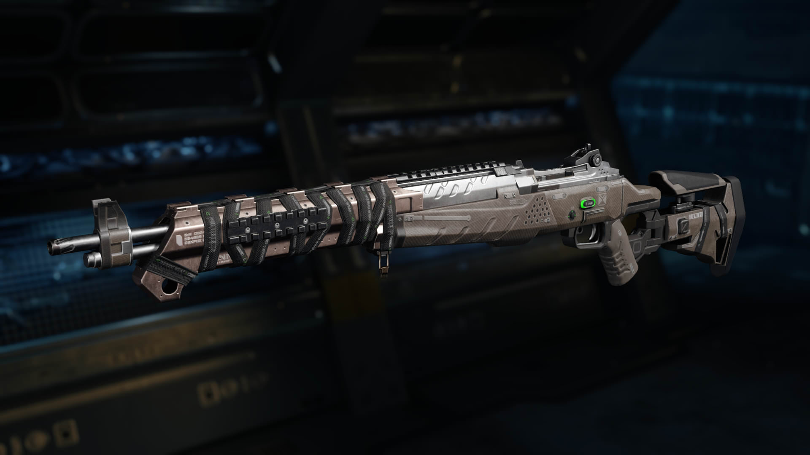
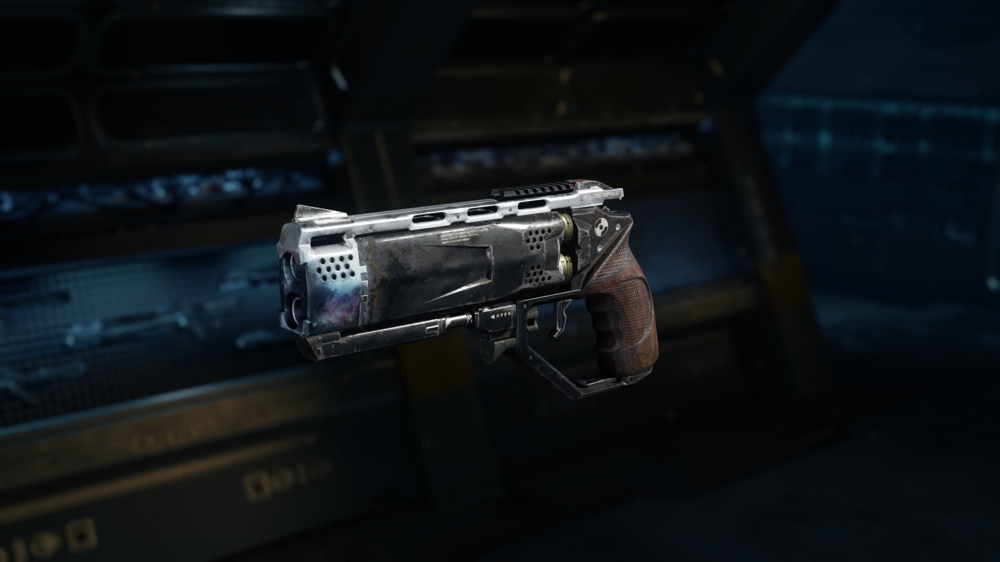
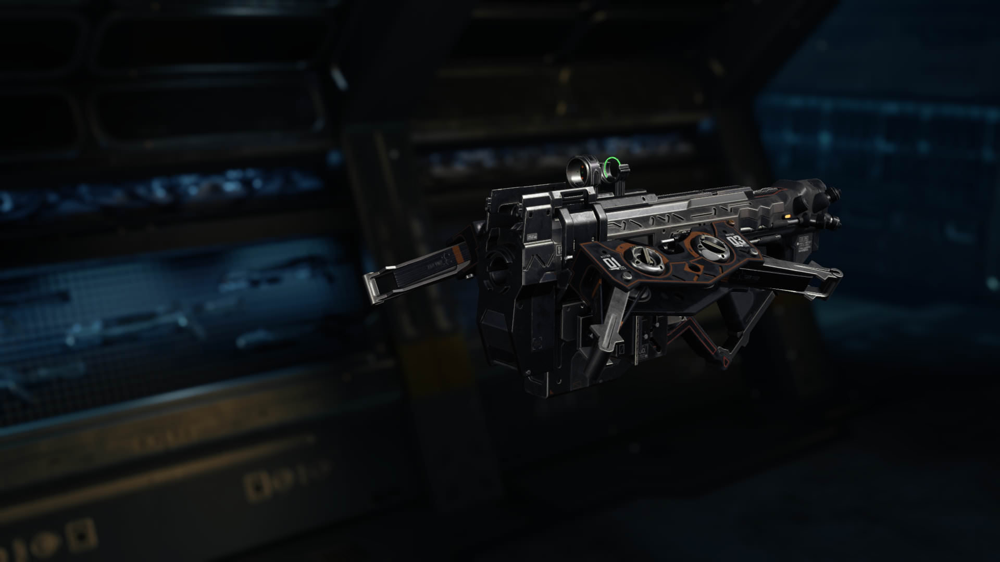
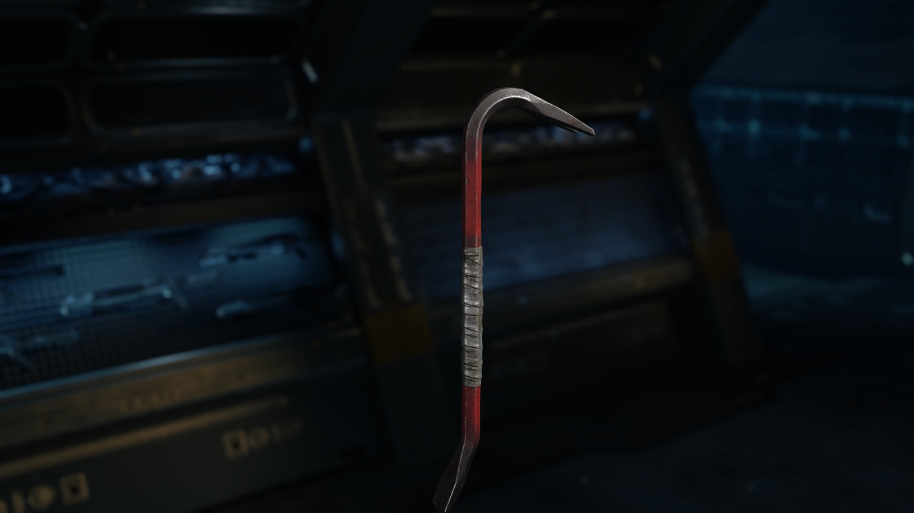
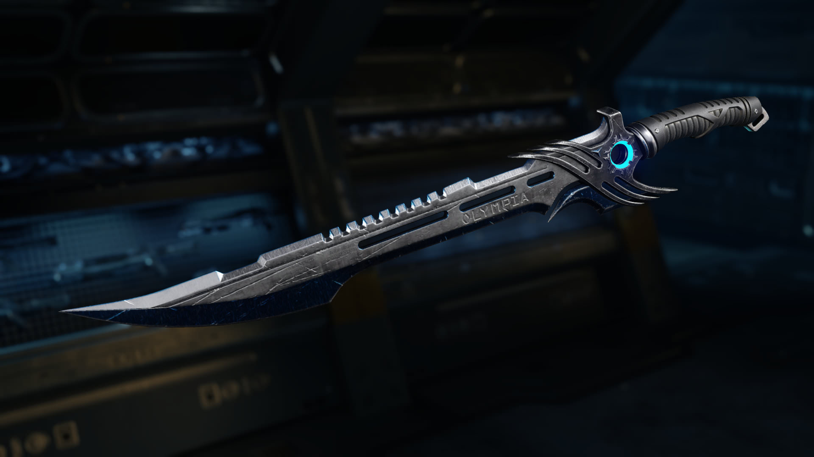

De epic seizoen
van zombies blijft
IN DE LAATSTE AFLEVERING VAN DE ZOMBIES ERVARING 'GOROD KROVI', WORDEN DE
ORIGINS TEKENS GESLINGERD IN EEN ALTERNATIEVE, DOOR OORLOG VERSCHEURDE
STALINGRAD, WAAR ELEMENT 115 RAVAGE HEEFT AANGERICHT IN EEN SLAGVELD BEZAAID
MET DE OVERBLIJFSELEN VAN EEN STRIJD TUSSEN GEMECHANISEERD SOLDATEN EN
DODELIJKE DRAKEN GECONTROLEERD DOOR GROUP 935. HIER ZAL DE ORIGINS
PERSONAGES HUN MEEST GEVAARLIJKE VIJANDEN NOG GECONFRONTEERD.
Vier nieuwe multiplayer maps.
AFDALING NEEMT DE STRIJD OM NIEUWE BLACK OP III MULTIPLAYER OMGEVINGEN,
WAARONDER CRYOGEN: EEN GEÏSOLEERDE CRYO-GEVANGENIS, BERSERK: EEN VIKING
DORP BEVROREN IN DE TIJD, RUMLE: EEN TOEKOMSTIGE ROBOT COMBAT ARENA, EN
EMPIRE: EEN RE-IMAGINING VAN DE CALL OF DUTY BLACK OPS II KLASSIEKE, RAID, EEN
WEELDERIGE ROMEISE VILLA.
nieuwe wapens
wapens
-  MX Garand (Assault Rifle) - Deze klassieke remake is een krachtige semi-automatische assault rifle die verwoestende op een afstand, waardoor targets neer met twee schoten.
-  Marshal 16 Shotgun-Pistol - Wanneer u een kamer in een haast te wissen, deze hand-kanon combineert de massieve vuurkracht van een dubbelloops jachtgeweer met de mobiliteit van een pistool.
-  NX Shadow Claw Crossbow - Deze stille, mid-range wapen levert dodelijk stealth projectiel bouten die kan worden opgehaald na het bakken.
melee wapens
-  Iron Jim - Lethal bruut geweld slagwapen haalt vijanden met een enkele botte staking.
-  Fury's Song - Deze legendarische zwaard neemt de volledige levensduur van de vijand met elk brede slash.